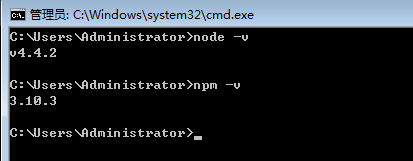

时间：2017-02-10
搭建本地开发环境前，需要安装node和npm，如下图所示，表示node和npm已安装。
确认你运行的 node 是v4.x.x或更高，npm 为3.x.x或更高，进行以下操作：
1.从github上克隆一个种子到本地，运行以下命令：
- git clone https://github.com/angular/quickstart.git quickstart
如果不了解git命令，请查看我的另一篇文章git常用命令
或者点此直接下载zip压缩包。
2.进入quickstart文件夹
- cd quickstart
安装环境
- npm install
因为网络的原因，安装比较慢，喝杯茶，慢慢等待。
安装完成后，运行
- npm start
运行npm start会自动打开Chrome浏览器，出现以下网页，代表环境搭建成功。
总结以下，其实就4个命令
- git clone https://github.com/angular/quickstart.git quickstart
- cd quickstart
- npm install
- npm start
参考官方文档
以上。